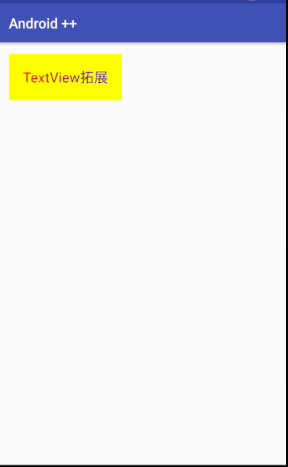
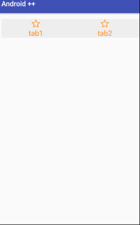
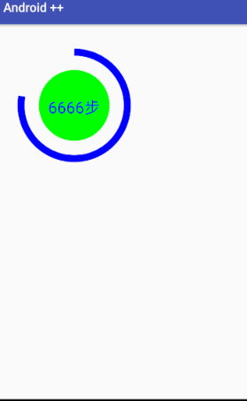

【Android】自定义 View
vecrates
12月 14, 2017
自定义 View，通常通过重写 View 中的部分方法实现，在 View 中比较重要的回调方法，可根据需要重写其中的方法:
onFinishInflate()，加载完 xml 文件回调
onSizeChanged()，view大小改变时回调
onMeasure()，测量View大小位置
onLayout()，确定显示位置
onTouchEvent()，触摸事件回调
实现自定义 View 的途径：
- 对现有控件进行扩展
- 对现有控件进行组合
- 重写全新控件
对现有控件进行扩展
实现过程：
1). 继承现有控件
2). 重写 onDraw() 方法
一个扩展 TextView 控件，实现渐变样式的 TextView，效果图

实现代码：
/**
* author: vecrates
*/
public class MyTextView extends TextView {
private int mViewWidth;
private int mViewHeight;
private LinearGradient mLinearGradient;
private Matrix mMatrix;
private int mTranslate = 0;
public MyTextView(Context context, AttributeSet attrs) {
super(context, attrs);
}
@Override
protected void onFinishInflate() {
super.onFinishInflate();
Log.v("_v", "onFinishFlate");
}
/**
* 测量view大小及位置
* @param widthMeasureSpec
* @param heightMeasureSpec
*/
@Override
protected void onMeasure(int widthMeasureSpec, int heightMeasureSpec) {
super.onMeasure(widthMeasureSpec, heightMeasureSpec);
Log.v("_v", "measureSpec: " + widthMeasureSpec + " " + heightMeasureSpec);
}
/**
* 组件大小改变时回调
* @param w
* @param h
* @param oldw
* @param oldh
*/
@Override
protected void onSizeChanged(int w, int h, int oldw, int oldh) {
super.onSizeChanged(w, h, oldw, oldh);
Log.v("_v", "onSizeChanged ");
if (mViewWidth == 0) {
mViewWidth = getMeasuredWidth();
mViewHeight = getHeight();;
Paint paint = getPaint(); //获得当前绘制的paint对象
mLinearGradient = new LinearGradient(0, 0, mViewWidth, mViewHeight,
new int[] {Color.RED, Color.BLUE}, null, Shader.TileMode.CLAMP);
paint.setShader(mLinearGradient); //给paint添加linearGradient
mMatrix = new Matrix();
}
}
/**
* 绘制view
* @param canvas
*/
@Override
protected void onDraw(Canvas canvas) {
Log.v("_v", "onDraw");
Paint paint = new Paint();
paint.setColor(Color.YELLOW);
paint.setTextSize(20f);
paint.setStyle(Paint.Style.FILL_AND_STROKE);
canvas.drawRect(0, 0, mViewWidth, mViewHeight, paint);
super.onDraw(canvas);
if(mMatrix != null) {
mTranslate += mViewWidth;
if(mTranslate > mViewWidth) {
mTranslate = 0;
}
mMatrix.setTranslate(mTranslate, 0);
mLinearGradient.setLocalMatrix(mMatrix);
postInvalidateDelayed(100); //刷新UI
}
}
}
在 xml 中使用自定义 View
<cn.vecrates.androidjinjie.MyTextView
android:layout_width="wrap_content"
android:layout_height="wrap_content"
android:padding="20dp"
android:text="TextView拓展"
android:textSize="20sp"
android:textColor="@android:color/black"
/>
创建复合控件
实现过程：
1） 根据需要自定义属性，指定属性名称及类型。通常情况下需要自定义属性来满足创建的控件，但这个是非必须的
2） java 类继承 ViewGroup ，并从 xml 中读取自定义属性的值。这里的 ViewGroup 不单是指 ViewGroup 类，还可以是以ViewGroup类为基类的类
3）根据需要生成子控件，并把获取到的 xml 值赋给相应的 View，把子控件组合生成组合控件。
4）使用控件
简单地实现一个 app 中常用的底部导航栏

1）:
<?xml version="1.0" encoding="utf-8"?>
<resources>
<declare-styleable name="ButtonBar">
<attr name="tab1Icon" format="reference"/>
<attr name="tab2Icon" format="reference"/>
<attr name="tab1Text" format="string"/>
<attr name="tab2Text" format="string"/>
<attr name="tabTextColor" format="color"/>
<attr name="tabIconWidth" format="dimension"/>
<attr name="tabIconHeight" format="dimension"/>
<attr name="tabTextSize" format="dimension"/>
<attr name="tabBackground" format="reference|color"/>
</declare-styleable>
</resources>
2） 3）：
/**
* author: Vecrates.
* describe: 此控件简单地仿常用 app 上的底部导航栏
*/
public class MyButtonBar extends LinearLayout {
// buttonBar 属性
private Drawable mTab1Icon;
private Drawable mTab2Icon;
private String mTab1Text;
private String mTab2Text;
private int mTabTextColor;
private float mTabIconWidth;
private float mTabIconHeight;
private float mTabTextSize;
//此 buttonBar 的子 view 组件
private LinearLayout mTab1Layout;
private LinearLayout mTab2Layout;
private ImageView mTab1ImageView;
private ImageView mTab2ImageView;
private TextView mTab1TextView;
private TextView mTab2TextView;
private IButtonBarOnClickListener mOnClickListener;
public MyButtonBar(Context context, AttributeSet attrs) {
super(context, attrs);
//从 xml 中获取自定义的属性集
TypedArray ta = context.obtainStyledAttributes(attrs, R.styleable.ButtonBar);
//从自定义属性集中获取值，以便为对应的 view 赋值
mTab1Icon = ta.getDrawable(R.styleable.ButtonBar_tab1Icon);
mTab2Icon = ta.getDrawable(R.styleable.ButtonBar_tab2Icon);
mTabIconWidth = ta.getDimension(R.styleable.ButtonBar_tabIconWidth, 10);
mTabIconHeight = ta.getDimension(R.styleable.ButtonBar_tabIconHeight, 10);
mTab1Text = ta.getString(R.styleable.ButtonBar_tab1Text);
mTab2Text = ta.getString(R.styleable.ButtonBar_tab2Text);
mTabTextColor = ta.getColor(R.styleable.ButtonBar_tabTextColor, 0);
mTabTextSize = ta.getDimension(R.styleable.ButtonBar_tabTextSize, 10);
//资源回收，避免重新创建时发生错误
ta.recycle();
init();
}
private void init() {
//创建 view，并把从 xml 文件中获得的值赋给相应的子 view
mTab1ImageView = new ImageView(getContext());
mTab2ImageView = new ImageView(getContext());
mTab1ImageView.setImageDrawable(mTab1Icon);
mTab1ImageView.setLayoutParams(new LayoutParams((int)mTabIconWidth, (int)mTabIconHeight));
mTab2ImageView.setImageDrawable(mTab2Icon);
mTab2ImageView.setLayoutParams(new LayoutParams((int)mTabIconWidth, (int)mTabIconHeight));
mTab1TextView = new TextView(getContext());
mTab2TextView = new TextView(getContext());
mTab1TextView.setText(mTab1Text);
mTab1TextView.setTextSize(mTabTextSize);
mTab1TextView.setTextColor(mTabTextColor);
mTab1TextView.setGravity(Gravity.CENTER);
mTab2TextView.setText(mTab2Text);
mTab2TextView.setTextSize(mTabTextSize);
mTab2TextView.setTextColor(mTabTextColor);
mTab2TextView.setGravity(Gravity.CENTER);
mTab1Layout = new LinearLayout(getContext());
mTab1Layout.setOrientation(VERTICAL);
mTab1Layout.setGravity(Gravity.CENTER_HORIZONTAL);
mTab1Layout.addView(mTab1ImageView);
mTab1Layout.addView(mTab1TextView);
mTab1Layout.setOnClickListener(new OnClickListener() {
@Override
public void onClick(View view) {
//把 tab 的点击转移给外部调用，1表示点击了第一个 tab
mOnClickListener.onClick(1);
}
});
mTab2Layout = new LinearLayout(getContext());
mTab2Layout.setOrientation(VERTICAL);
mTab2Layout.setGravity(Gravity.CENTER_HORIZONTAL);
mTab2Layout.addView(mTab2ImageView);
mTab2Layout.addView(mTab2TextView);
mTab2Layout.setOnClickListener(new OnClickListener() {
@Override
public void onClick(View view) {
//把 tab 的点击转移给外部调用，2表示点击了第二个 tab
mOnClickListener.onClick(2);
}
});
LayoutParams layoutParams = new LayoutParams(LayoutParams.MATCH_PARENT, LayoutParams.WRAP_CONTENT);
layoutParams.weight = 1;
layoutParams.gravity = Gravity.CENTER;
addView(mTab1Layout, layoutParams);
addView(mTab2Layout, layoutParams);
}
/**
* 把实现了接口的对象回传
* @param listener
*/
public void setButtonBarListener(IButtonBarOnClickListener listener) {
mOnClickListener = listener;
}
/**
* buttonBar 点击事件接口
*/
interface IButtonBarOnClickListener {
void onClick(int index);
}
}
4）：
<cn.vecrates.androidjinjie.MyButtonBar
android:layout_width="match_parent"
android:layout_height="wrap_content"
android:background="#eee"
customView:tab1Icon="@drawable/icon"
customView:tab2Icon="@drawable/icon"
customView:tabIconWidth="26dp"
customView:tabIconHeight="26dp"
customView:tab1Text="tab1"
customView:tab2Text="tab2"
customView:tabTextColor="@android:color/holo_orange_dark"
customView:tabTextSize="6sp"
/>
创建全新控件
过程：根据需要重写上文提到的几个方法，或者自定义属性等，重点在
onDraw() 自己绘制 View.
实现一个那啥….

1）自定义属性
<?xml version="1.0" encoding="utf-8"?>
<resources>
<declare-styleable name="MyCustomeCircle">
<attr name="centerX" format="float"/>
<attr name="centerY" format="float"/>
<attr name="circleRadius" format="float"/>
<attr name="interval" format="float"/>
<attr name="circleShowText" format="string"/>
</declare-styleable>
</resources>
2）继承 View, 读取属性值，绘制所需的 View.
/**
* author: Vecrates.
* describe: 全新的自定义控件
*/
public class MyCustomCircle extends View{
//内圆属性
private float mCenterX;
private float mCenterY;
private float mCircleRaduis;
private float mInterval; //弧与内圆间隔多大
private RectF mArcRecf;
private String mShowText;
public MyCustomCircle(Context context, AttributeSet attrs) {
super(context, attrs);
TypedArray ta = context.obtainStyledAttributes(attrs, R.styleable.MyCustomeCircle);
//圆
mCenterX = ta.getFloat(R.styleable.MyCustomeCircle_centerX, 400);
mCenterY = ta.getFloat(R.styleable.MyCustomeCircle_centerY, 400);
mCircleRaduis = ta.getFloat(R.styleable.MyCustomeCircle_circleRadius, 100);
//弧
mInterval = ta.getFloat(R.styleable.MyCustomeCircle_interval, 50);
//弧的外接矩形
mArcRecf = new RectF(
(float)(mCenterX - mCircleRaduis - mInterval),
(float)(mCenterY - mCircleRaduis - mInterval),
(float)(mCenterX + mCircleRaduis + mInterval),
(float)(mCenterY + mCircleRaduis + mInterval)
);
mShowText = ta.getString(R.styleable.MyCustomeCircle_circleShowText);
}
@Override
protected void onDraw(Canvas canvas) {
super.onDraw(canvas);
Paint circlePaint = new Paint();
circlePaint.setColor(Color.GREEN);
circlePaint.setStyle(Paint.Style.FILL);
canvas.drawCircle(mCenterX, mCenterY, mCircleRaduis, circlePaint);
Paint arcPaint = new Paint();
arcPaint.setColor(Color.BLUE);
arcPaint.setAntiAlias(true); //无锯齿
arcPaint.setStrokeWidth(40); //线宽度
arcPaint.setStyle(Paint.Style.STROKE);
canvas.drawArc(mArcRecf, 270, 280, false, arcPaint);
Paint textPaint = new Paint();
textPaint.setColor(Color.BLUE);
textPaint.setTextSize(90);
textPaint.setTextAlign(Paint.Align.CENTER);
canvas.drawText(mShowText, mCenterX, mCenterY+90/2, textPaint);
}
}
3）使用
<cn.vecrates.androidjinjie.MyCustomCircle
android:layout_width="match_parent"
android:layout_height="match_parent"
customView:centerX="400"
customView:centerY="400"
customView:circleRadius="200"
customView:interval="100"
customView:circleShowText="6666步"
/>